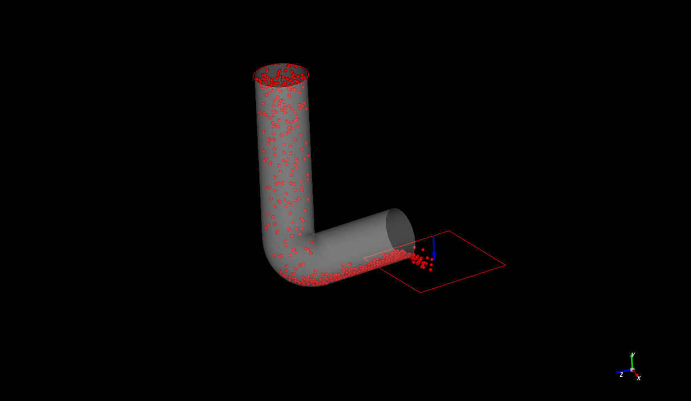

Note
Go to the end to download the full example code.
Start Simulation Async#
This example sets up and solves a simulation of particles interacting with a rotating L-shape tube wall using an async call.
{kind=link}
Perform imports and create a project#
Perform the required imports and create an empty project.
import os
import tempfile
import time
import matplotlib.pyplot as plt
import numpy as np
import ansys.rocky.core as pyrocky
from ansys.rocky.core import examples
# Temporarily pin to v252 because next version is failing on Pyro connection
ROCKY_VERSION = 252
# Create a temp directory to save the project.
project_dir = tempfile.mkdtemp(prefix="pyrocky_")
# Launch Rocky and open a project.
rocky = pyrocky.launch_rocky(rocky_version=ROCKY_VERSION)
project = rocky.api.CreateProject()
project.SaveProject(os.path.join(project_dir, "rocky-testing.rocky"))
Configure the study#
study = project.GetStudy()
# Download the STL file that was imported into Rocky to represent a wall.
file_name = "Lshape_tube.stl"
file_path = examples.download_file(project_dir, file_name, "pyrocky/geometries")
wall = study.ImportWall(file_path)[0]
# Create a particle with the default shape (sphere) and size distribution (single
# distribution with a sieve size of 0.1 m).
particle = study.CreateParticle()
# Create a circular surface to used as the inlet.
circular_surface = study.CreateCircularSurface()
circular_surface.SetMaxRadius(0.8, unit="m")
# Create a rectangular surface to use as the outlet.
rectangular_surface = study.CreateRectangularSurface()
rectangular_surface.SetLength(3, unit="m")
rectangular_surface.SetWidth(3, unit="m")
rectangular_surface.SetCenter((5, -7.5, 0), unit="m")
# Set the inlet and outlet.
particle_inlet = study.CreateParticleInlet(circular_surface, particle)
input_property_list = particle_inlet.GetInputPropertiesList()
input_property_list[0].SetMassFlowRate(1000)
outlet = study.CreateOutlet(rectangular_surface)
# Set the motion rotation over the Y axis and apply it on the wall and the
# rectangular surface used as the outlet.
motion_frame_source = study.GetMotionFrameSource()
motion_frame = motion_frame_source.NewFrame()
motion_frame.AddRotationMotion(angular_velocity=((0.0, 0.5, 0.0), "rad/s"))
motion_frame.ApplyTo(rectangular_surface)
motion_frame.ApplyTo(wall)
# The domain settings define the domain limits where the particles are enabled to be
# computed in the simulation.
domain = study.GetDomainSettings()
domain.DisableUseBoundaryLimits()
domain.SetCoordinateLimitsMaxValues((10, 1, 10), unit="m")
Download successful. File path:
C:\Users\ansys\AppData\Local\Temp\pyrocky_f5uo3o1d\Lshape_tube.stl
Set up the solver and run the simulation#
solver = study.GetSolver()
simulation_duration = 5
solver.SetSimulationDuration(simulation_duration, unit="s")
# `non_blocking` only available on Rocky 25R1 and onwards.
study.StartSimulation(non_blocking=True)
True
Postprocess#
Obtain the in and out mass flows of the particles while the simulation is running.
particles = study.GetParticles()
while study.IsSimulating():
# When running an asynchronous simulation, the call to RefreshResults is required
# to ensure that the results are updated.
study.RefreshResults()
times, mass_flow_in = particles.GetNumpyCurve("Particles Mass Flow In", unit="t/h")
times, mass_flow_out = particles.GetNumpyCurve("Particles Mass Flow Out", unit="t/h")
print(f"Simulation Progress: {study.GetProgress():.2f} %")
print(f"\tCurrent mass_flow_in: {mass_flow_in[-1]:.2f} t/h")
print(f"\tCurrent mass_flow_out: {mass_flow_out[-1]:.2f} t/h")
time.sleep(2)
print("Simulation Complete!")
times, mass_flow_in = particles.GetNumpyCurve("Particles Mass Flow In", unit="t/h")
times, mass_flow_out = particles.GetNumpyCurve("Particles Mass Flow Out", unit="t/h")
# Obtain the maximum and minimum velocities of the particles at each time step.
simulation_times = study.GetTimeSet()
velocity_gf = particles.GetGridFunction("Velocity : Translational : Absolute")
velocity_max = np.array(
[velocity_gf.GetMax(unit="m/s", time_step=i) for i in range(len(simulation_times))]
)
velocity_min = np.array(
[velocity_gf.GetMin(unit="m/s", time_step=i) for i in range(len(simulation_times))]
)
Simulation Progress: 0.00 %
Current mass_flow_in: 904.78 t/h
Current mass_flow_out: -0.00 t/h
Simulation Progress: 30.00 %
Current mass_flow_in: 1005.31 t/h
Current mass_flow_out: -0.00 t/h
Simulation Progress: 39.00 %
Current mass_flow_in: 1005.31 t/h
Current mass_flow_out: -0.00 t/h
Simulation Progress: 45.00 %
Current mass_flow_in: 1005.31 t/h
Current mass_flow_out: 201.06 t/h
Simulation Progress: 51.00 %
Current mass_flow_in: 1005.31 t/h
Current mass_flow_out: 502.65 t/h
Simulation Progress: 57.00 %
Current mass_flow_in: 1005.31 t/h
Current mass_flow_out: 804.25 t/h
Simulation Progress: 63.00 %
Current mass_flow_in: 1005.31 t/h
Current mass_flow_out: 904.78 t/h
Simulation Progress: 69.00 %
Current mass_flow_in: 1005.31 t/h
Current mass_flow_out: 1105.84 t/h
Simulation Progress: 80.00 %
Current mass_flow_in: 1005.31 t/h
Current mass_flow_out: 804.25 t/h
Simulation Progress: 85.00 %
Current mass_flow_in: 1005.31 t/h
Current mass_flow_out: 1005.31 t/h
Simulation Progress: 90.00 %
Current mass_flow_in: 1005.31 t/h
Current mass_flow_out: 703.72 t/h
Simulation Progress: 95.00 %
Current mass_flow_in: 1005.31 t/h
Current mass_flow_out: 502.65 t/h
Simulation Progress: 100.00 %
Current mass_flow_in: 1005.31 t/h
Current mass_flow_out: 804.25 t/h
Simulation Complete!
Plot curves#
fig, (ax1, ax2) = plt.subplots(2, 1)
ax1.plot(times, mass_flow_in, "b", label="Mass Flow In")
ax1.plot(times, mass_flow_out, "r", label="Mass Flow Out")
ax1.set_xlabel("Time [s]")
ax1.set_ylabel("Mass Flow [t/h]")
ax1.legend(loc="upper left")
ax2.plot(simulation_times, velocity_max, "b", label="Max Velocity")
ax2.plot(simulation_times, velocity_min, "r", label="Min Velocity")
ax2.set_xlabel("Time [s]")
ax2.set_ylabel("Velocity [m/s]")
ax2.legend(loc="upper left")
plt.draw()
rocky.close()
import time
time.sleep(5)
Total running time of the script: (1 minutes 7.872 seconds)